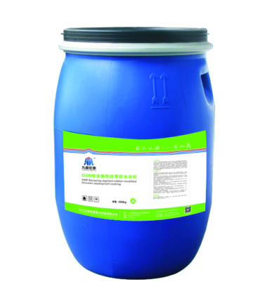

当前位置：
当前位置：
产品概述
DSR-高聚物改性沥青防水涂料是以优质石油沥青为原料，高分子橡胶为改性剂，经溶剂溶解配制而成的黑色粘稠状、细腻而均匀胶状液体的一种防水涂料。该涂料具有优异的耐热性、粘结性，施工后所形成的弹性高强涂膜，能够适用于各种防水工程，防止渗水造成结构破坏、钢筋锈蚀、混凝土碳化，大大延长建筑物的使用寿命。
产品图片

产品特性
● 高温不流淌、低温不龟裂，温度适应性好。
● 产品具有良好的粘结性、抗裂性和柔韧性，并耐酸、碱等化学腐蚀、耐霉变、耐候。
● 涂料固化迅速，能在常温下及较低温度下冷施工，操作方便。
● 产品不含苯等有毒溶剂。
JC/T852-1999 溶剂型橡胶沥青防水涂料
| 序号 | 项目 | 防水指标 | ||
|---|---|---|---|---|
| 一等品 | 合格品 | |||
| 1 | 固体含量，%≥ | 48 | ||
| 2 | 抗裂性 | 基层裂缝，mm | 0.3 | 0.2 |
| 涂抹状态 | 无裂纹 | |||
| 3 | 低温柔性，ф10mm，2h | -15℃ | -10℃ | |
| 无裂纹 | ||||
| 4 | 粘结性，MPa≥ | 0.20 | ||
| 5 | 耐热性，80℃，5h | 无流淌、鼓泡、滑动 | ||
| 6 | 不透水性，0.2MPa，30min | 不渗水 | ||
应用领域
适用于一般房屋建筑及桥梁、高速公路的防腐、防水。